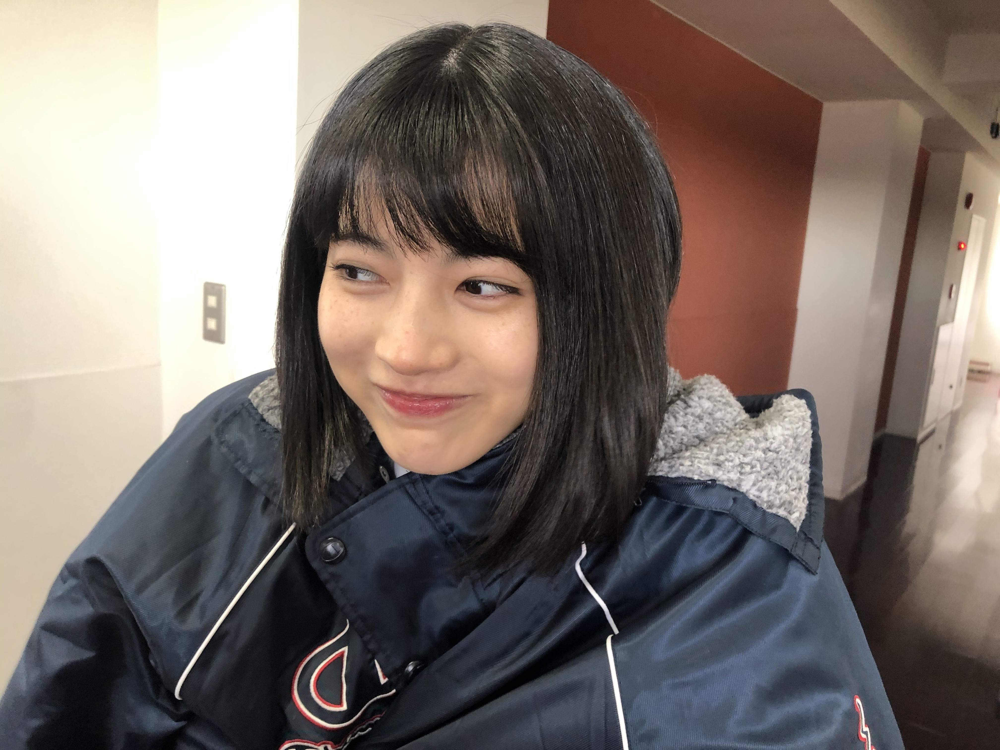

2020/1220Sunお疲れ様です！超楽しみな林瑠奈です！！！
本日もお疲れ様です。
乃木坂46、4期生の林瑠奈です。
神奈川県出身高校2年生17歳
華咲くセブンのティーンの林瑠奈です。
負けるなしょげるな林瑠奈、今日も1日頑張るな
(ピンポーン)
48周目となりました、ブログリレー。
わたくしも昨日一昨日と、楽しませていただきました。
現場に行かれている方も、配信をご覧になっている方も全力で楽しまれていたら幸いです！
いや〜熱いですね！！！

何の写真でしょうか。お楽しみに！
...........................................................................
皆さん今日は何の日かご存知かもしれませんが。
M-1グランプリ2020決勝戦の日です！！
いや〜、ほんっとに楽しみです！！！
優勝予想とかしたいんですけど、とんでもなく烏滸がましいのでやめておきます。
事前予想(人気)だと、ニューヨークさんが1位だったんです。
すごくないですか！？というのは失礼。
でも、ここ一年での快進撃というか、メディア露出も増えてらっしゃって、追い切れないこともしばしば。
去年の決勝2本目でやる予定だったネタも、ニューヨークさんの公式YouTubeチャンネルにあがってますが、今思うと本当に2本目見たかったなぁと。
登場人物がもう、『私信やないかーい！！！』って思ってしまうレベル。
今年はキングオブコントでも準優勝でしたし、この勢いでM-1ではどんな結果を残されるのか、非常に非常に楽しみでございます！
そして忘れてはいけないのが、敗者復活戦！！
わたくしも現在進行形で見させて頂いていまして、申し訳ながら投票もさせて頂こうと思っております！！
金属バットさんが上がってこられるのかなぁと事前予想しつつ、ニッポンの社長さんの漫才が見たいなと思いつつ、インディアンスさんも好き。
決められない！！本当に皆さん面白くて素敵な方々なので、たのしいを超えてたのE。
そして、祇園さんが敗者復活戦を欠場されたのが本当に残念というか、見たかったなという気持ちでいっぱいです。
でも会場に、祇園さんののぼりを出ていたようで、M-1グランプリさんの愛を感じました。
心がホカ弁です。
ただアンダーライブも観たいので、M-1グランプリは録画をして、ネットニュース等々の情報源となるものに触れず、自分で後ほど結果を見たいなと思っています。
キングオブコント2020を見させて頂いていたときは、
『ジャルジャルおめでとう』
という友達等からの連絡を、通知で見てしまったがために本当に形容できない気持ちになったので、携帯の通知はオフにして対策しようと思います。
ルンルンルン♪♪♪
...........................................................................
明日はミュウちゃんです。
なんか最近顔見てなくない？
アディオス！！！！！！！！！！！！
P.S.紅の詩を聴きながらM-1へのボルテージを上げる今日この頃。
かしこ
2020/12/20 16:48

PROFILE
新4期生リレー
202104
| SUN | MON | TUE | WED | THU | FRI | SAT |
|---|---|---|---|---|---|---|
| 1 | 2 | 3 | ||||
| 4 | 5 | 6 | 7 | 8 | 9 | 10 |
| 11 | 12 | 13 | 14 | 15 | 16 | 17 |
| 18 | 19 | 20 | 21 | 22 | 23 | 24 |
| 25 | 26 | 27 | 28 | 29 | 30 | |

コメント(154)
俺もm1見よーっと！
写真も可愛すぎるし、本当に癒しです(>_<)
M-1観たことないけど、はやしさんが観るなら見るねー！
大好き！
今日はM-1ですね。個人的には東京ホテイソン。ふぁいと。
アンダラも見たかったけど、財布と相談したら無理でした。
学生と言うのは辛いものです。
質問「今日の夜ご飯が最後の晩餐って言われたらどうします？」
僕は肉じゃがなので満足です。
そんじゃ今回はこの辺でアディオス！！アディオス！！！
(大事なので2回言いました。ボラの面構え。すき。)
おーー、ガチヲタのるなぴもアンダラを見たか？
ああ、副音声付き映像を見たかったなあ＼(^o^)／♪（笑）
あれ？何の写真かな？楽しそうな顔してるよね(*´ω｀*)
相変わらずお笑い好きだよね
いつかM1GP絡みのお仕事が出来たら良いなあ(*´ω｀*)
ただし、自分はあまり詳しくないから、文章を読んで全然ピンとこない(ﾟдﾟ)！（笑）
でもルンルンルン♪るなぴならば嬉しいよ＼(^o^)／
これからも頑張って(/･ω･)/
ミュウといえば、ノギザカスキッツの絶望なしりとりを見た？（笑）
詳しすぎてついていけないわ笑漫才についてミーグリで教えてねー！
アンダーライブ最終日だね。久しぶりの有観客だから盛り上がるだろうね。また全体で有観客ライブ出来たらいいね。
ー質問ー
・気晴らしではよく何をする？
・やる気を出すためにすることってある？
・ひとり○○で何かしてみたいことってある？
ありがとう！次回も楽しみにしているよ。
M-1当日にブログの番回ってくるなんてさすが持ってますねぇ(笑)
個人的にはニューヨークさんか東京ホテイソンさん、敗者復活枠でぺこぱさんかなぁ…(笑)
るなぴと一緒に見れたら楽しかったんだろうなぁ！！(笑)
次のブログがM-1の感想になると予想させていただいているので楽しみにしてます(笑)
また次のブログでね！！
アンダラ3日目ちょうど見てます！
色々感動するところもありますね
M-1自分もニューヨークさんに入れました！
自分で見て感情を表したいよね笑
アディオス！！！！！！！！！！！！
啓答
今日はM-1だね！るなぴがニューヨークさんのことを話してるからやっぱ少し他のコンビより応援しちゃうよね笑
優勝できるといいね！次のブログで解説とか聞いてみたい！
アンダラ三日間、るなぴから見た先輩たちの姿はどう映ったのかな。
この前4期ライブがあったばかりだけどまた早くるなぴのパフォーマンスが見たいな〜
年末年始はコンテンツがたくさんあってリアルタイムと録画の取捨選択が大変だよね〜笑
次のブログも楽しみにしてるね！年末年始、体調崩さないようにね〜
お笑い楽しいよね〜
癒されてたまらない〜
アンダラ、素敵ですね
配信ライブでみてますがやっぱり乃木坂、素敵ですね
瑠奈ちゃんのかっこいい姿、見たいです。
それではまたコメントさせていただきます。
adidas！
最近、瑠奈ちゃんの影響でジャルジャルさん見るようになったよ！
お笑いとかあんまり見なかったけど、めっちゃ面白いね！
M1のこと書きます。自分は敗者復活戦で今忙しいぺこぱがここまで頑張ってくれているのでぜひ勝ち上がってほしいと思います。ネタとか作る暇がなくて大変だと思うし！
あとはニューヨークさんも楽しみにしてます！いまキングオブコントでノリに乗ってるのでこのままてっぺんとってほしいですね！いやぁでも楽しみ！！
誰が優勝するのでしょうか！！
ゴードンでした！ではでは！
アンダーライブにM-1と乃木坂もお笑いも好きな瑠奈ちゃんにとって12/20は大忙しだね(笑)
敗者復活戦はバイトで見れなかったんだけど、誰が出場されるのか楽しみ〜
ブログを読んでいると本当に瑠奈ちゃんのお笑い好きが伝わってくるね
よりM-1を楽しめそうです！
写真は何のお仕事だったのか気になりますね〜
楽しみにしてます！
またね！
笑う門には福来たる
悪魔が来りて笛を吹く
ヤマトナデシコ七変化
尊いね
アンダーライブも見たよ
今日はmー１だね
でも瑠奈が上！
大好き
私も今M-1見てるー！
るなちゃんの予想が当たるといいね！！
るなちゃんも私もM-1見てるってことは実質一緒に見てるってことですね！遠距離おうちデート！(ごめんなさいキモいですね黙ります)
この前のLINELIVE見ました！
もう‥初っぱなの「ライスください！」でやられました、、鬼可愛かったです！！
林節もたくさんあって面白かったです笑
新制服すごい似合うからまた制服姿のるなちゃんを見れる日が待ち遠しいです‥‥！
とりあえず、M-1一緒に楽しみましょ！
またコメントします！アディオス！かしこ。
乃木坂自体あんまり知らないんだけども、林瑠奈さんのブログだけなんか見ちゃう
写真可愛いし、内容やワードセンスがめっちゃ自分好み
頑張ってください！！M-1たのしもーー！
アンダラ見たかったけれど、いろいろ重なりみえませんでした、(x_x)
Ｍ-1見ます(≧▽≦)
質問です！
来年の抱負は？
今年で、一番楽しかったことはー？
クリスマスといえば、ケーキですが、なに味のケーキが好きですか？
答えてくれたらうれしいです！
もうすぐ冬休みです！(≧▽≦)
写真楽しそうな顔だねー！いいことあったのかなー？
お体にお気をつけてお過ごしください！
また書き込むねー！
またねー！
チャァオ〜〜〜!☆彡
るなちゃん❕❤️❤️❤️❤️❤️笑顔
金属バットさん❔❤️❤️❤️笑顔
ワンパンマンの〜〜〜⤴️⤴️
Ｓ級16位の金属バットさん❔❤️❤️❤️笑顔
(＠＾▽゜＠）ゞ❤️❤️❤️
❇️❇️おすまし！⚜️❇️⭐彡
私もM-1予約しているので、メディアでの情報をシャットダウンして今日以降見ようと思いますが、如何せん実家暮らしなので、どうせ明日の朝テレビから優勝者の名前が聞こえてしまう結末が目に見えているので、今から残念な気持ちになってます。。
あと毎朝ニュースアプリを見るのが日課なので、M-1のことを忘れて普通に見てしまいそうな自分にも腹立っています。
ちなみにキャッチフレーズの「今日も1日頑張るな」というフレーズなのですが、これは「頑張るな＝頑張らないで」という意味なのか「頑張るな＝頑張る瑠奈」という意味なのか、どっちですか？？
ソロで歌ってるところ感動しました！
これからも頑張ってね！
応援してるよ！
僕はアキナとニューヨーク楽しみにしてます！！
M-1、始まりましたね！
今日は敗者復活から見てます〜
現在インディアンスのネタが終わったところです笑
また次回のブログ更新で感想共有したいですね！
載せてくれた写真、何だろ楽しみにしてるね！
アディオス！！
お疲れ様です
4期生ライブにアンダーライブと楽しみ続きで有難いです
年末も後少し頑張りましょう
ブログ更新ありがとう！
他のメンバーとテイストが違うブログでいつも楽しんでるよ！
画像は新曲のMV撮影？と予想！
質問
・冬にやるルーティンはありますか？
・4期生ライブの時のソロ緊張した？（堂々としすぎてて、乃木坂として初のライブには見えなかった！）
・好きなコンビニスイーツは？
そしてアンダーライブも最終日❗️
タブレットでライブを観て、テレビでM-1を観てます
ニューヨーク優勝すると良いですね
初めてコメントします、しーちゃんです⸜(*˙꒳˙*)⸝
アンダラ、私は都合がつかなくて観ること出来ませんでしたが、全オタクが沸くほど素晴らしいセトリでしたよね
参戦した方の感想を見て参戦した気にだけなりました笑
紅の詩、私もよく聴く大好きな曲です、いい歌ですよね！
2番の歌詞が特に好きです
瑠奈ちゃんのパフォーマンスがまた見たいです
体調に気をつけて、これからも頑張ってください✩°｡ ⸜(* ॑ ॑* )⸝
今日はるなぴが待ちに待ったM-1グランプリの日ですね！
先程リアルタイムでニューヨークさんのネタ見ました！
僕は最近のぶっ飛んでる系のネタよりも、正統派ネタが好きなので、今回のファーストラウンドのネタはとてもウケました笑
るなぴもネタを覚えているくらい好きな方だし、面白いんだろうと思っていました。
まだまだ色んな人が出てくるので楽しみです。
アンダラ、今日はノンストップ披露ということで。
凄いですね。アンダーもいい曲がいっぱいあるので大好きです。
今年もあと僅か。
残りの10日を充実して過ごせるようにお互い頑張りましょう！
あでぃおす！！！
るなぴもアンダラ見てたんだね✨
今日はアンダラもM-1もあって忙しいけど両方楽しんでね！！
次の更新楽しみにしてるね！！
単独ライブに一番､行きたいのはニッポンの社長さんだったけど漫才の大会で一番､漫才で笑わせてくれたのが学天即さんだったので学天即さんを第一候補にさせて頂きました。
それにしても今年はどのコンビが優勝するんだろうね～？
パックンマックンかなぁ～？？
今回もお疲れ様。いつもありがとう。
今回のブログ更新日は、お笑い好きだからこそ引き寄せた運命の日だと思う！w
自分もモチベ爆上がりで、たのしい超えてたのEだよ！
お互い楽しもう！
ニューヨークさん、優勝できると嬉しいね。
今回のM-1の感想、いつか聴かせてね！
今日もお写真ありがとう！
なんかの撮影カナ？ドラマとかの大きな仕事だと嬉しいなぁ…
お互い体調管理に気をつけて過ごそう。
次のブログも期待してるな！w
アディオス！！！！！！！！
かしこ
今ちょうどアンダーライブ最終日の配信を見終わってコメントしています。自分は今アメリカに居て、いろいろつらいことなどありましたが、今回のライブをみて元気と勇気をもらえました。乃木坂46さんは僕の力の源です。
話は変わりまして、M１．僕は金属バットさんが好きで、ネタがすごく面白いのになぜ準決勝で止まってしまっているのか不思議でしょうがないです。
紅の詩って私立恵比寿中学さんの曲ですか？僕はファミリーでもあるので、紅の詩の字をみた瞬間なぜかドキッとしました。紅の歌の柏木ひなたさんの伸びのある歌声素敵ですよね
ってコメント書いてたら。おいでさんが１位なってる。
チャァオ〜〜〜〜!☆彡
るなたん❕❤️❤️❤️❤️❤️笑顔
M―1グランプリ2020の優勝者はねぇ〜〜〜⤴️⤴️⤴️・・・
・・・❕笑顔
優勝者はねぇ〜〜〜⤴️⤴️⤴️・・
・・・！
あとのお楽しみ〜〜〜⤴️⤴️⤴️❕❤️❤️❤️❤️❤️笑顔
(＠＾▽゜＠）ゞ❤️❤️❤️
❇️❇️おすまし！⚜️❇️⭐彡
ライブ終わったらなにを楽しみに生きようかと落ち込んでいたら、るなぴとのミーグリがあるではないか、生きよう、強く生きよう。もう何しゃべればいいか毎日考えてにやけが止まりません。すごーーーくたのしみにしてます☺︎
何の話題がいいのか迷ってるんだけどなにがいいかなぁぁぁ？？？
質問
掛林の結婚はいつですか？牧師立候補します！
コメントする